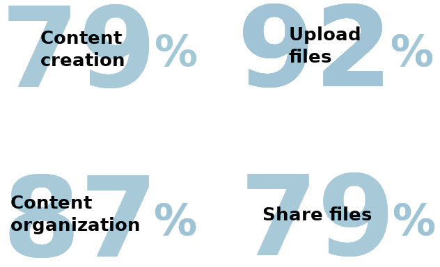

Highlight
A gaming-focused cloud storage site designSummary
This project was created from a simple initial goal: design a cloud storage system from the ground up. Through research, revision, and refinement, Highlight, a cloud storage site built by and for gamers, was created.
I researched, designed, and built Highlight from the ground up. The wireframing, mockups, and branding, were all created using Figma, while the final clickable prototype was created using InVision. Additionally, Usability Hub was used for preference testing, WebAim for accessibility testing, and Google Drive for documenting each step in the process. The InVision prototype was the final deliverable for the project- a clickable MVP of a fully branded cloud storage site.
Check out the final prototype
The Problem
While analyzing the current cloud storage ecosystem, one thing became abundantly clear; the cloud storage space is currently dominated by a few major players, but these companies are either unable or unwilling to focus on the unique needs of more niche audiences. Diving further into this research, it came to light that gamers needed a space to upload and share a variety of files with their friends.
The Solution
Highlight is a cloud storage app built by a gamer, for gamers. Files can be created, uploaded, and shared quickly, all aspects shown by user research to be very important. As additional features become needed due to a rapidly changing market, the design allows for additional features to be added, to compliment everything that has come before. Furthermore, the design was refined through usability testing, preference testing, and invaluable input from senior designers.
Discovery
The client’s idea
Everything started with a client approaching me, website idea in hand. The client wanted to make a cloud storage service, but didn’t have a firm idea of what they wanted it to look like, who they wanted to target, or even what platform to launch on. They had several ideas for what they wanted to include, but weren’t sure which features users would actually respond well to. All this was given to me, to take, research, and ultimately craft their cloud storage service from.
The tools
My role
For this project, it fell to me to do the user research, brainstorming, prototyping, branding, refinement, user testing, and final touches. Each stage of this process also included seeking, receiving, and incorporating feedback from potential users, peers, and/or more experienced designers. Without their invaluable feedback, Highlight would have looked very different, and was greatly improved thanks to all those who offered their feedback.
Competitive analysis
My first task was to analyze the competition. In the cloud storage space, Google Drive and Dropbox are the two biggest players, so I performed a SWOT analysis on these two. As the number one video hosting service, I also checked out YouTube. Each of these three had issues with their platform hower, that could allow for a site like Highlight to break into the market.

- Google has every incentive to sell data about your content to advertisers.
- To create non-supported file types, users must install third-party extensions.
- Mobile app does not natively allow file editing.
- Dropbox does not make on-site file creation easy to find, or easy to use.
- Very limited space (3.75GB) is initially offered to store files.
- File security has been a major issue for quite some time.
- Youtube only supports video files.
- There is no official way to download videos posted by others.
- There is an overwhelming amount of content uploaded every single day, making finding content difficult.
I also analyzed the user flows for these three companies, documenting their onboarding process, content organization methods, and file saving methods. These processes all proved to be reasonably similar to one another, and provided inspiration for Highlight’s onboarding process.
User Survey
The next step was to survey users about a potential gaming-focused cloud storage service. The goals of the survey were to learn what features users thought were important for a cloud storage service, and how they would primarily use such a service. For instance, users were asked which features they wanted to be included:
Furthermore, respondents were mostly interested in uploading their content to privately share with friends.
Information Architecture
After the survey results, and a few followup interviews with respondents, It was time to create user personas. Both needed to be interested in games to fit into our target audience, so we created Josh a competitive gamer, interested in his stats and improving, and Allie, a community leader looking for a new home for her content. Both were used as reference points throughout the development of Highlight, to help keep the users the focus of the product.
User testing 1
After completing the digital wireframes, I used InVision to compile them into a clickable prototype. With this prototype, I asked a few users to create an account, create a new file, and move a file into a folder. Each tester was able to complete every task successfully, providing invaluable feedback as they did so. Some modifications that came from the testing included:
Reduce the text length on the landing page
Add screens where the fields have text, as though the user had filled out the fields.
Make the information appear when the field is selected, not just when the (i) button is selected.
Visual Design
With the wireframing done and tested, it was time to focus on Highlight’s brand. Highlight needed a brand that conveyed:
- Excitement
- Victory
- Energy
- Pride
- Gaming
Mindmap
To help generate ideas for potential logos, I began with a mind map focused on different types of games.

Sketches
From this mindmap, I began sketching potential logos, exploring the different directions I could take.
Logo refinement, fonts, and brandname
From the sketched concepts, I chose both the trophy and the brandname “Highlight”. Both help emphasize the celebration of skillful moments, and encourage users to take pride in their content. To compliment these, I selected two fonts- Orbitron and Gulim. Orbitron helped convey the technical/modern feeling that this gaming-focused brand needed, and helps distinguish the trophy logo from a trophy used for traditional sports. Gulim is a font that is much less tiring to read in large quantities, and as a sans-serif font is easier to read on screens.
I then used Figma to digitize the logo, trying a variation with each selected font.
Moodboard
To help convey the theme of the brand, I created a moodboard. I pulled images and colors together to form a collage that would serve to keep me focused on a consistent look and feel throughout the rest of the design. Neon blues and purples were used to help really drive home the gaming theme, and to give the brand the cyber feel that so many games have paid homage to.

Style guide
Finally with all of the branding largely constructed, I put everything into a style guie. This was a guide that dictated logo usage, brandname usage, scaling, brand colors, typography, headings, and buttons.
View full style guideProtyping and Testing
The next step was to finally combine the branding with the wireframes, choosing colors and images to fill in previously designated locations. My first draft was very dark, to help the neon lettering and imagery stand out, and to evoke the night mode favored by many who play games late into the night. With this draft, I looked to senior designers for feedback before extrapolating the designs out to similar screens.

The second draft incorporated a whole swath of changes recommended by senior designers and preference tested users including:.
- Shrinking down the logo to better align with modern logo usage.
- Changing the color of the brandname in the opening line to help emphasize the brandname, in accordance with the results of one of my preference tests (more on this later).
- Separating hero navigation links with space instead of lines, and changing what links were present.
- Adding empty space along the sides of the page to more easily scale to different browser widths.
- Separating each section with additional space to help the page feel less cramped.
- Adding a neon pink gradient to the middle of the page to make the page less overwhelmingly dark.
- Adding additional navigation links at the bottom of the page.
- Shrinking down all the text to better match font sizes used across the web.
The third draft incorporated even more changes as recommended by senior designers.
- Added a call to action button immediately below the first heading.
- Added additional space between the hero navigation buttons.
- Removed the teal background behind the login link to make it consistent with the other links.
- Changed the wording of the opening header to make a clearer call to action.
- Narrowed the text further down the page to help it feel more in line with the surrounding images.
- Moved new/upload buttons into sidebar on dashboard
- Made dashboard sidebar collapsible.
- Replaced generic text with specific examples (username -> Matka, File 1 -> CotN Review).

The fourth and final draft (viewable in its entirety here) once again incorporated feedback from senior designers and users testing the site (and again, more on the testing in the next section).
- Added additional call to action buttons below each heading.
- Changed the wording of the initial heading on the landing page to make it clearer that the site was a cloud storage site due to user testing revealing some confusion as to the purpose of the site upon initial viewing.
- Modified popup windows:
- Lightened the shading used behind the windows.
- Moved text field labels outside the fields to aid accessibility tools.
- Removed information buttons.
- Summarized information previously hidden behind buttons and added it to the popup.
- Added cancel buttons.
- Modified text in the sharing options popup to clarify the difference between the submit and done buttons. Also added a line to visually separate the submit and done buttons.

User testing 2
While working on the high fidelity mockups, it was necessary to conduct several preference tests. I asked users their preferences on button placement, icon colors, headings, and brandname placement. These tests were performed to determine which variants of elements users favored.
Additionally, these screens were compiled into a clickable prototype (viewable here), to test users’ comfort when performing common tasks. Testers were asked to create an account, add a new file, and give a friend editing permissions for a file. The changes implemented from this testing included:
Clarified the difference between the "Add editors" and "Additional editors" actions.
Made clearer that the site was a cloud storage site.
Renamed "Reset password" button to "Change password" button
Conclusion
After many weeks of researching, testing, designing, and modifying, Highlight has gone from an idea to the cloud storage site it is now.
What did and did not work?
Initially, everything was oversized- the text, images, and content was taking up too much of the screen. Scaling everything down, and pulling it more towards the center of the screen helped make everything much more usable.
Leaving space at the sides accommodates a wider variety of browser widths, making frontend’s job much easier.
The dark backgrounds definitely help the vibrant colors have the impact they are meant to. However, overusing them, as I initially did, can make the pages feel overwhelming, and drown out the bright elements that are meant to shine.
Moving forward
Should I have more time to work on this project, I would add additional features.
- A home page to browse popular public posts.
- A way to connect to other users to prioritize select users’ content.
- A search function to quickly find not only their own content, but content that their connections had made public.
- A fleshed-out mobile version of this app could help expand the userbase into the console gaming space.
- Additional content visibility controls, so that only users you had connected with could view a particular piece of content.
Final Thoughts
At the end of the day, I enjoyed growing Highlight from a few paper sketches into something that could be made into a real, usable site. Having come from an engineering background, the best part of any project is seeing the final product, and knowing that you had a part in building what used to only exist inside your head into reality. I’m glad I had the opportunity to create this, and look forward to the next idea I can mold into something real.